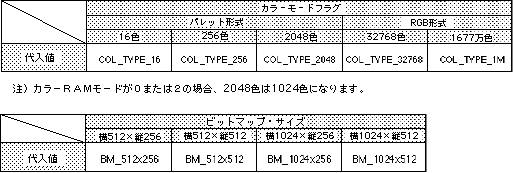

Return to previous page | Return to menu | Go to next page
void
Scroll function
Bitmap mode setting (NBG)
void slBitMapNbg0(col_type , bmsize , bmadr)
void slBitMapNbg1(col_type , bmsize , bmadr)
Uint16 col_type ;
Uint16 bmsize ;
void *bmadr ;
col_type color mode flag bmsize bitmap size flag bmadr Bitmap top address on VRAM (can only be specified every 200H)
Change the screen to bitmap mode and set the color mode and bitmap size.
None
Refer to the table below for the flags to be assigned to parameters
However, only "NBG0" can specify 16.77 million colors.

Note) Each value in the above table is defined in “sl_def.h” included with the system.
Reference: HARDWEAR MANUAL vol.2 (VDP2)
slBitMapNbg0,1